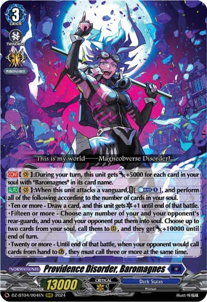
| Vanguard | Rideline | Rearguards | magicne | ostalo | |
|---|---|---|---|---|---|
Baromagnes (samo ubacujes karte u dusu, vg dobija bolje efekte sto vise karata u dusi) | 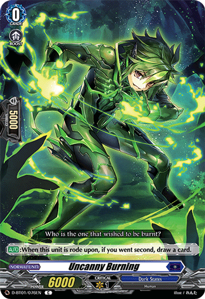 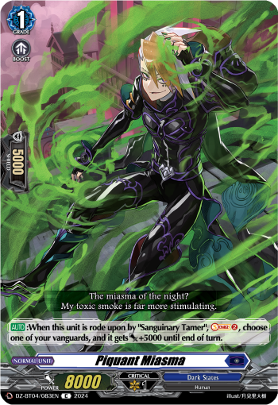 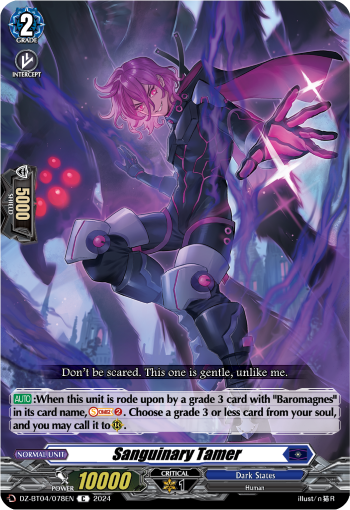 | 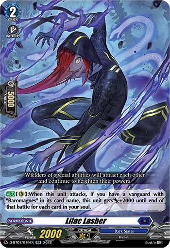 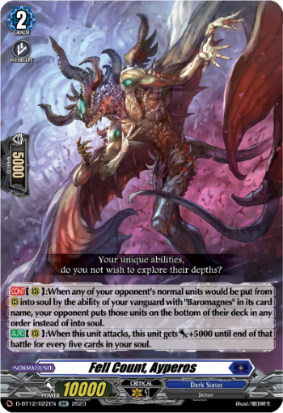 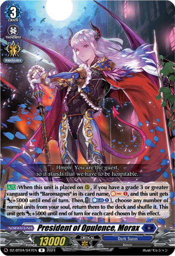 | 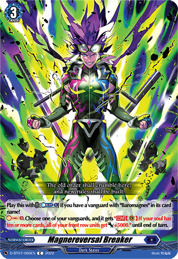 | ||
Bebebebe (vg bebe standuje male bebe i pretvara ih u velike bebe) | 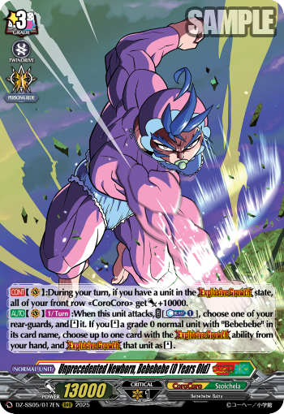 | 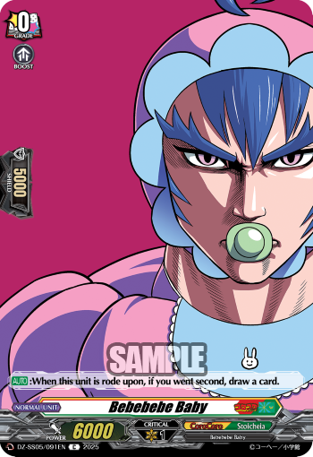 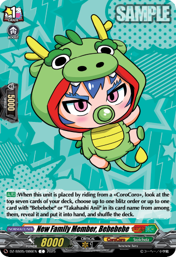 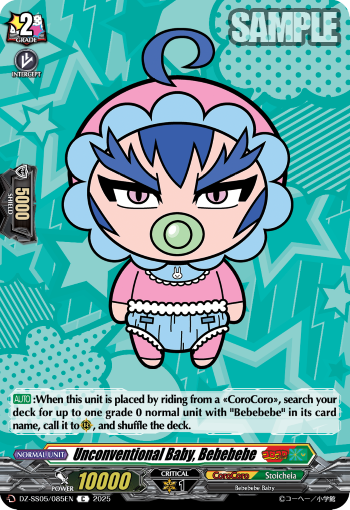 | 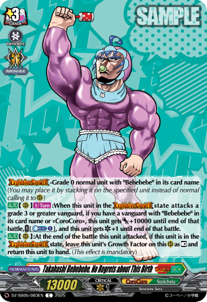 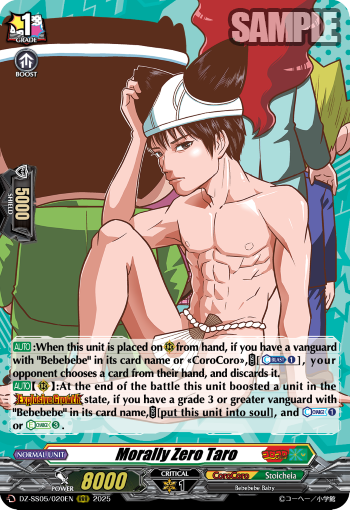 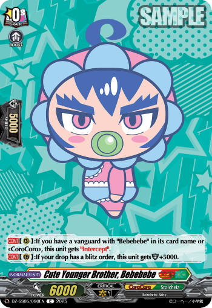 | 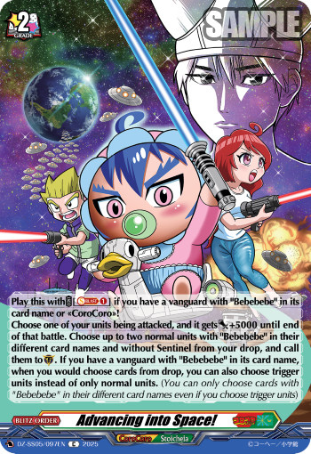 | |
Granfia (vanguard poziva noblessrose iza sebe; noblessrose ti jede sve ostale tokene da ona bude sto veca) | 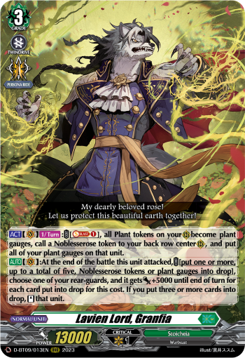 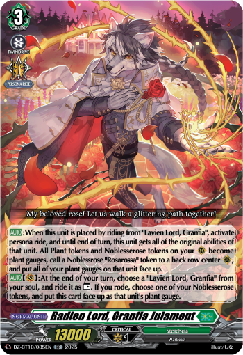 žuti granfia je u ride decku,
crveni se rideuje kao persona ride | 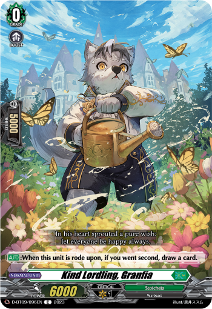 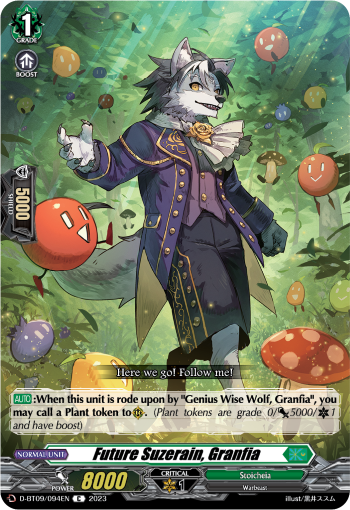 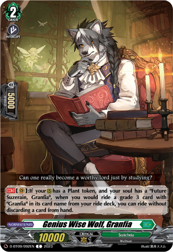 | 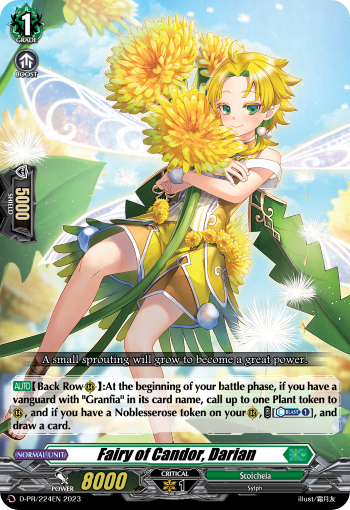 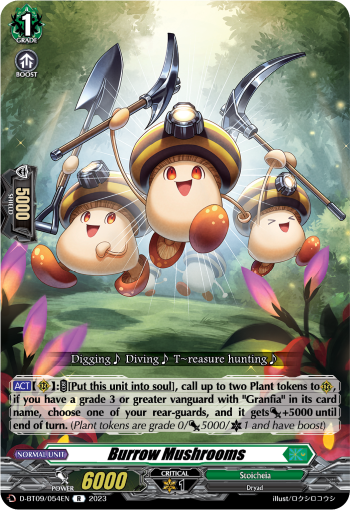 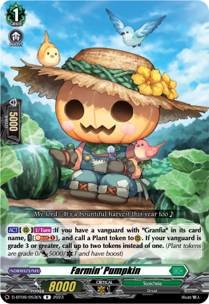 | 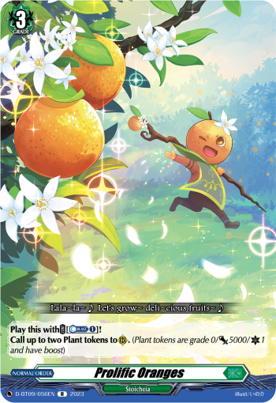 | 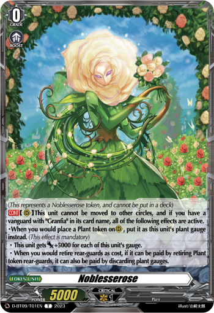 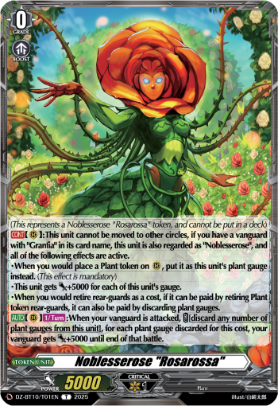 zuti granfia poziva belu noblessrose,
zuti je upgradeuje u crvenu |
Grhyaundra (na pocetku svakog poteza se vanguard rastavi na ghry (decak) i aundra (zmaj)
kad njih dvojica napadnu, spoje se u vanguarda (udju u dusu i vg se standuje)) | 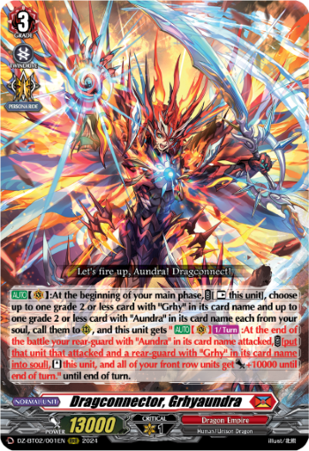 | 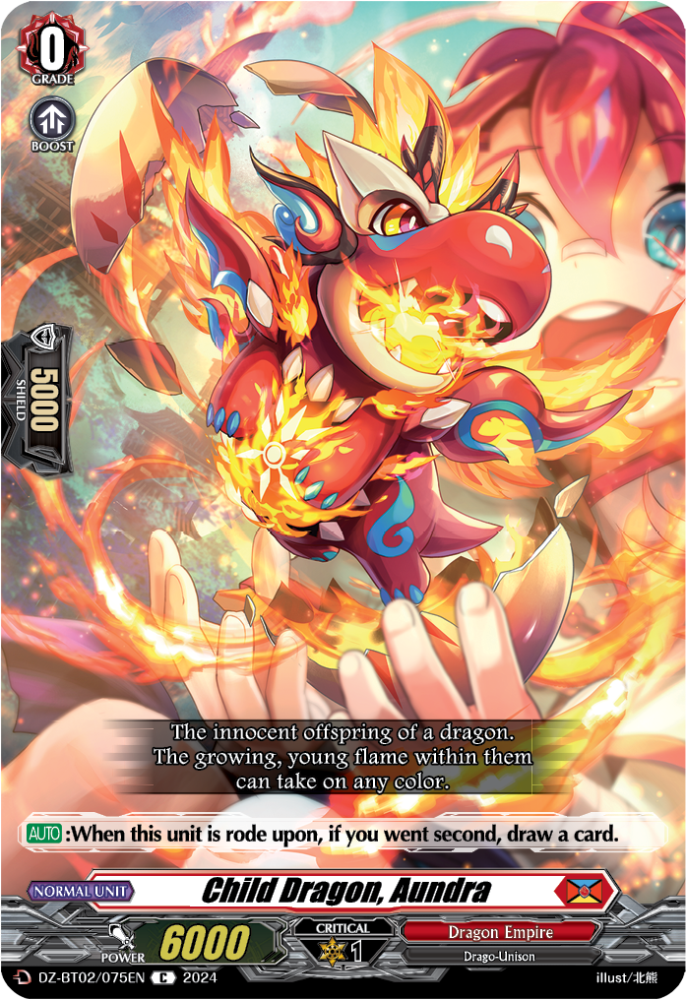 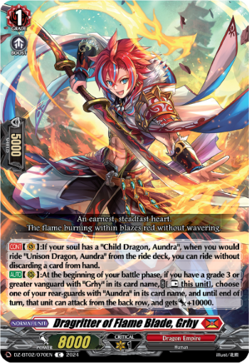 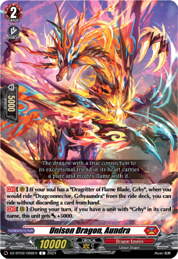 | 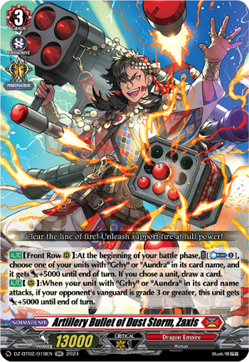 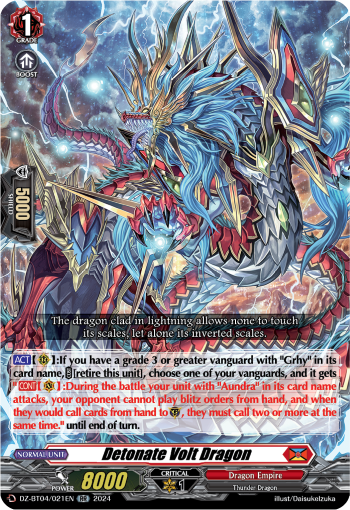 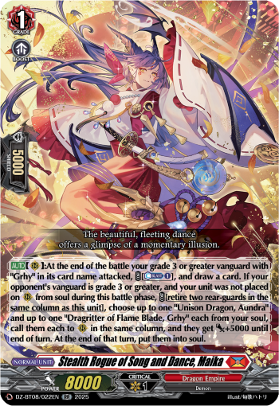 | 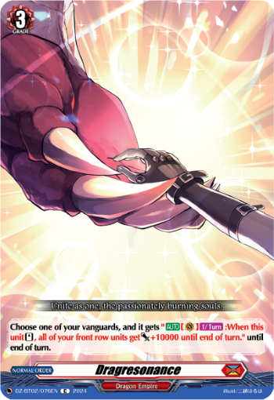 | |
Hachisuka Kotetsu (vg pretvara sve g2/g3 rearguarde u boostere i standuje ih) |  |    |    skoro sve g2/g3 jer mogu da boostuju (budu 50k+ kolone) | ||
Haseritt (pojacava manje rearguarde i vraca ih u ruku posle borbe (koreorgrafija?)) | 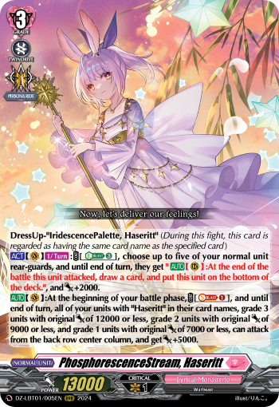 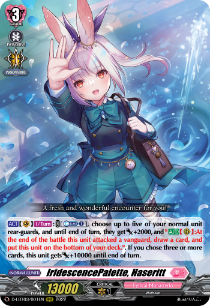 samo jedan od ova 2 vg se igra, ne oba | 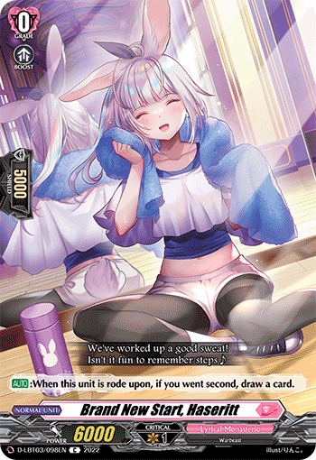 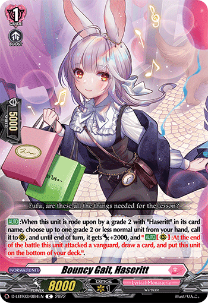 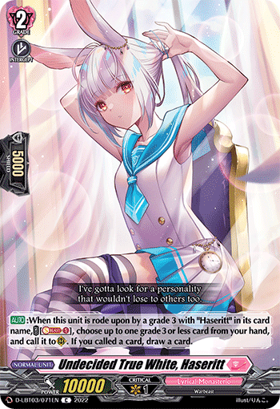 | |||
Liael-Odium (destined one of TIME
vanguard (i magicna) ti postavljaju regress gauge-ove
kad nakupis 5 gauge-ova, JEDNOM PO DUELU, mozes da vratis vreme unazad (dobijes jos jedan potez)) | 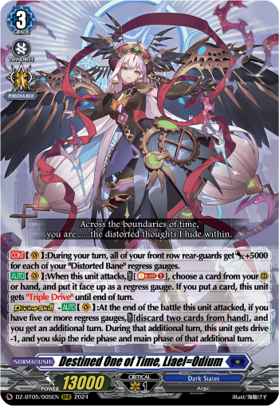 | 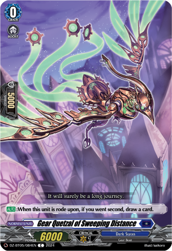 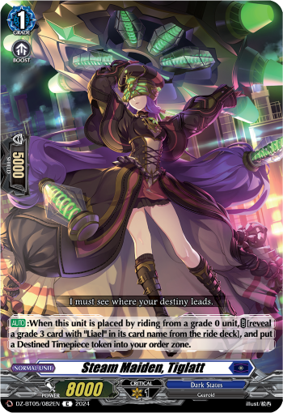 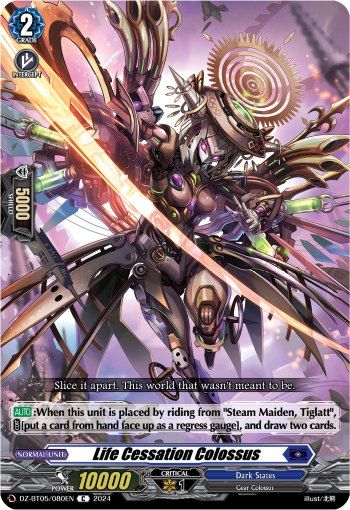 | 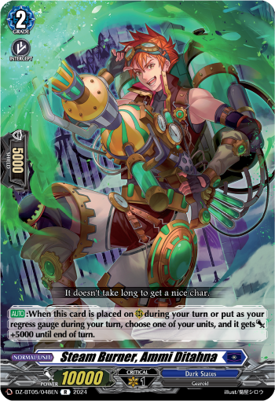 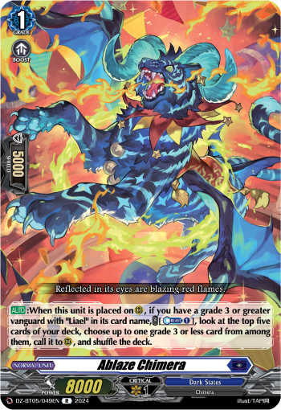 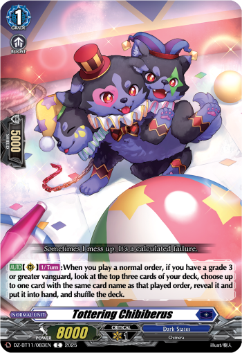 | 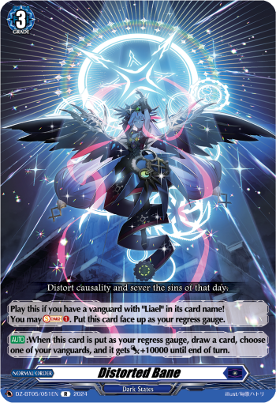 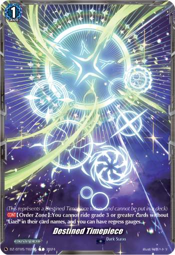 | |
Loronerol (Loro jednom po potezu moze da otpeva pesmu
sve magicne su pesme, imaju efekat kad su napisane (odigrane iz ruke), i drugi efekat kad su otpevane (preko effekta vg)) | 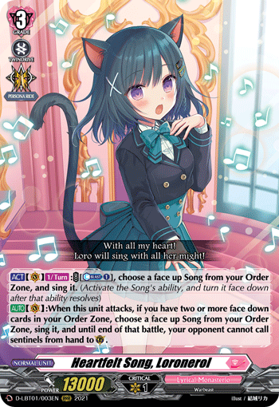 | ||||
Mordalion (magicna i vanguard ti postavljaju rearguarde u zasedu (undercover) (kao u zatvor kad se stavljaju karte)
kad vanguard napada rearguardi iskacu iz zasede (za dodatne napade)) | |||||
Ootachi (vg kad napada standuje g3 rearguarda
ako je na vrhu decka trigger -> nanosi 1 damage) | trening | ||||
Rorowa (rady poziva momoke token, momoke jede ostale tokene da bude sto veci i napada iz zadnjeg reda) | momoke token | ||||
Sacrifice-Glass (vanguard ubija rearguarde i skuplja energy
kad ubije dovoljno pretvara se u grandogmu koja moze opet da napada itd) | magicna ozivljava protivniku rearguarde da ih vg ponovo ubije | ||||
Sybilt (zmajic -> sperod -> podivljali sperod (u priči ovde sperod umre) -> veliki zmajic podivlja nacisto
zmajic (veliki) je uvek u mentalno poremecenom stanju
moze da menja druge reaguarde da i oni budu mentalno poremeceni (dobiju +5000, standuje ih, i oni umru na kraju poteza)) | |||||
Tamayura (vg poziva rarami i ririmi iz duse kada napada
posle se one vracaju u dusu
gomila magicnih iz nekog razloga) |